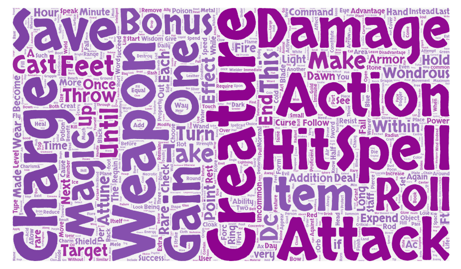
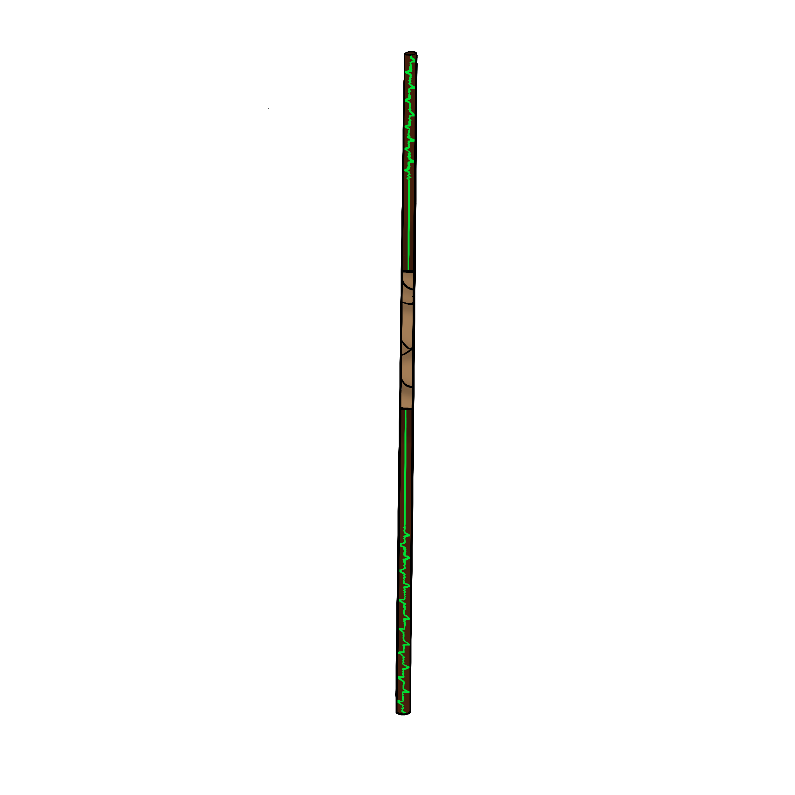
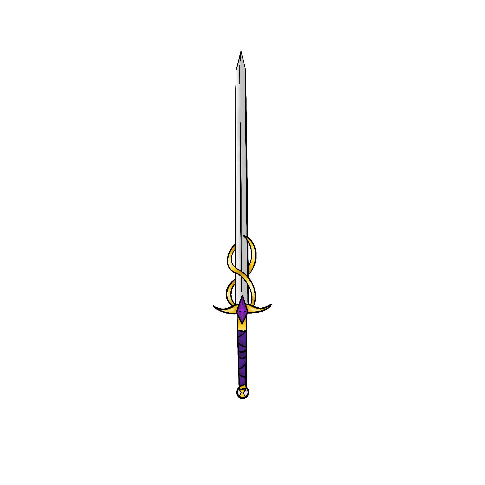
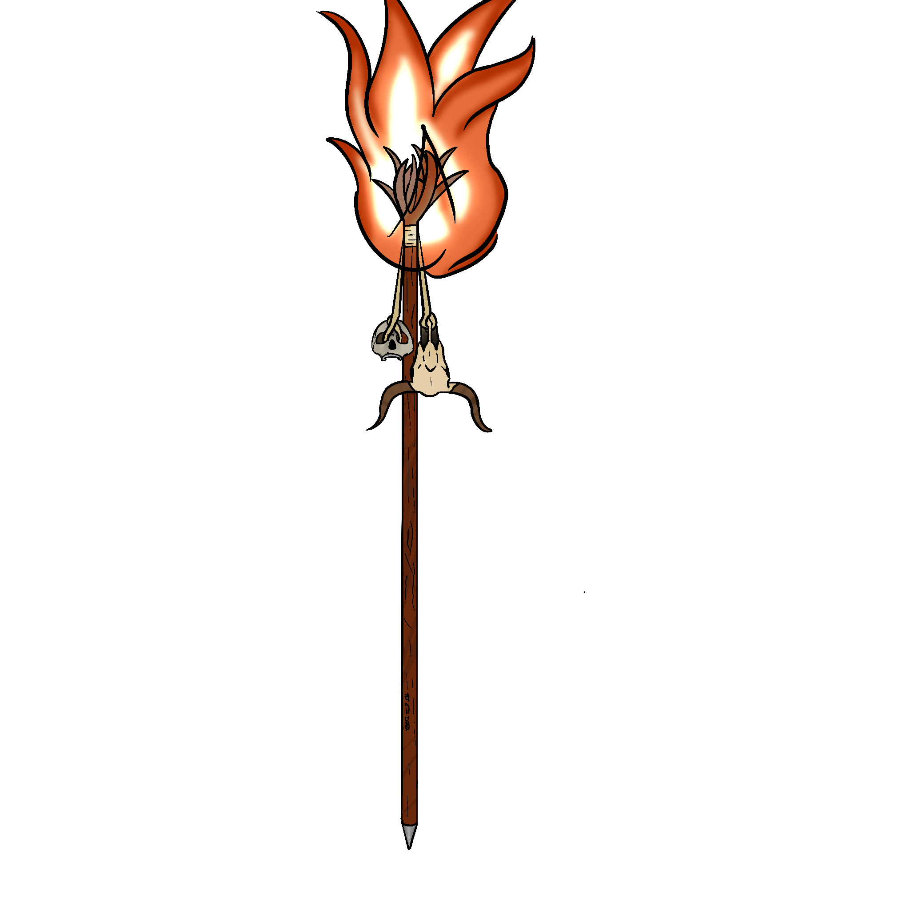
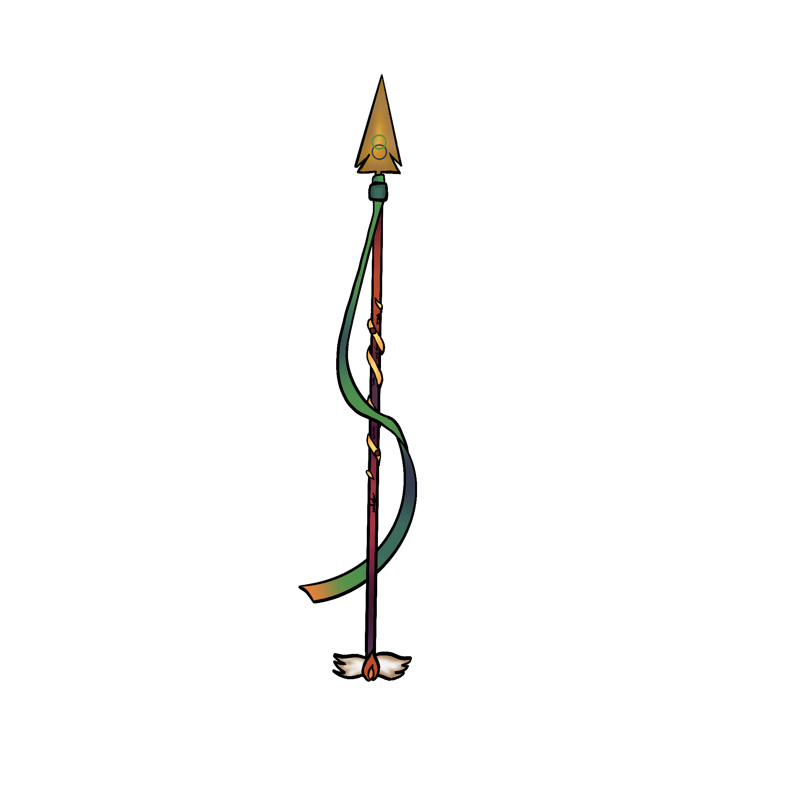
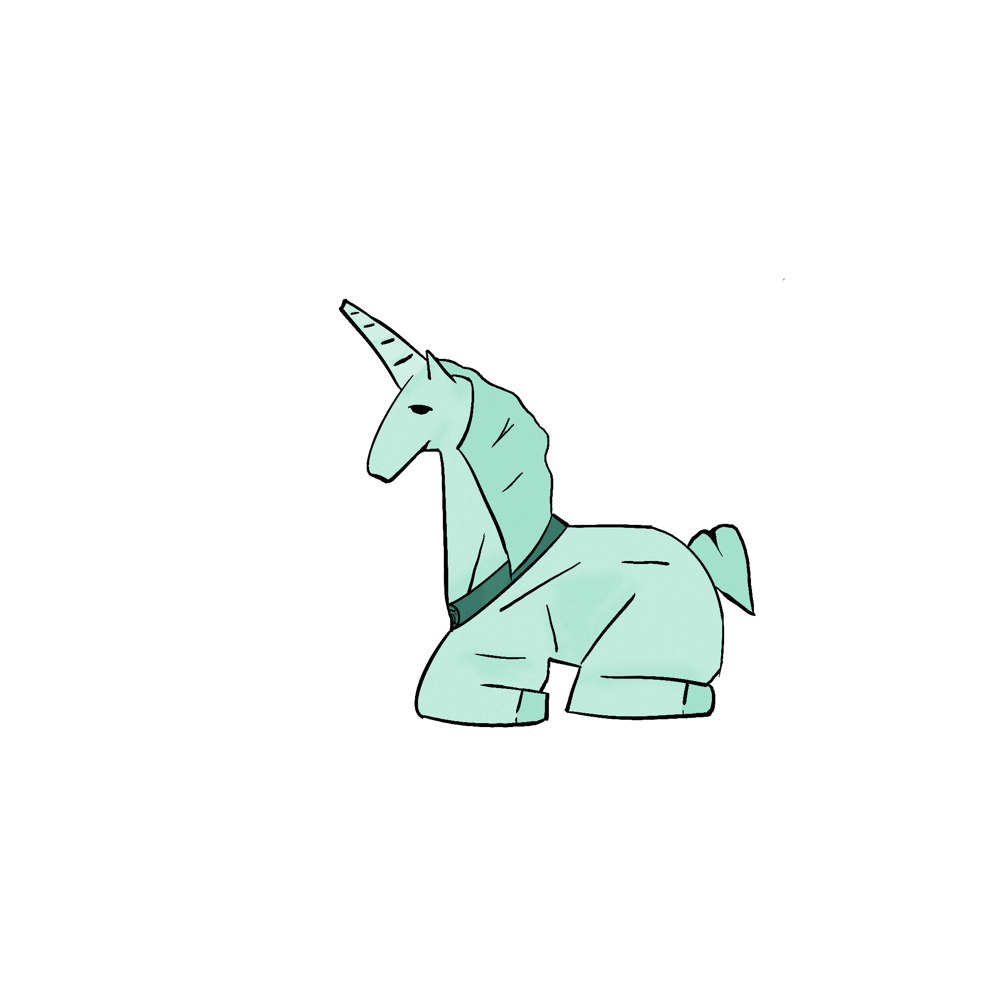

Introduction:
What is a Tabletop Role Playing Game?
A tabletop role-playing game (TTRPG) is a game with structured rules that also provides an open-ended gaming experience for all particpants. Players can make decisions that affect the world in which they are playing in - whether that be earning powerful artifacts or slaying dangerous enemies to save the world. TTRPGs provide written content or a blocks of rules that describe creatures, places and objects for the purpose of play. Game Masters (GMs), who are tasked with administering and moderating these rules, often find themselves compelled to create content beyond the confines of given prewritten rules—a practice commonly known as "homebrewing." Crafting a new set of rules for a TTRPG, however, demands meticulous work to ensure a fair and enjoyable gaming experience.
What is Natural Language Processing?
Technology has made considerable leaps and bounds in recent years to understand the world around us. Through a process called machine learning, engineers are able to feed computers with data and develop models capable of understanding the underlying patterns in that data. One subfield of machine learning is called "Natural Language Processing", or the ability for computers to understand human language. Computers typically talk in 1s and 0s, so having a computer understand written words no easy feat. This field has been extensively studied and shows success on multiple tasks. One such popular product which uses this technology is ChatGPT.
What is this project about?
This web page delves into the intersection of TTRPGs and Natural Language Processing (NLP), the discipline dedicated to enabling computers to comprehend rule-based languages. Given that the essence of a TTRPG resides in its rules, the application of NLP becomes pivotal in the intricate task of generating content that adheres to these rules.
Our proposal introduces "Artificer Intelligence," a Large Language model fine-tuned on rules governing the TTRPG Dungeons and Dragons (D&D), Fifth Edition. This is an assistive model, a writing tool that helps game masters quickly write content for their games - It is meant to help the game master rather than replace them. This model specifically focuses on magic items, or a block of rules players can use to enhance their character’s capabilities. This innovative approach aims to streamline the process of creating rules-compliant content for TTRPGs, marking a significant leap forward in the synergy between artificial intelligence and the world of tabletop gaming.
Background:
Dungeons & Dragons (D&D) is a collaborative fantasy role-playing game (RPG) that originated in 1974. It is typically played by a group of 2-6 players and a Dungeon Master (DM). Players create fictional characters and embark on adventures within a world created by the DM. The DM narrates the story, controls the non-player characters (NPCs), and adjudicates the rules of the game. Players make decisions for their characters and influence the story through their actions and dice rolls.
D&D uses a set of polyhedral dice (d4, d6, d8, d10, d12, and d20) to determine the outcomes of actions and combat encounters. Players consult rulebooks and character sheets to determine their character's abilities, skills, and equipment.
Magic items in the context of D&D are blocks of rules which represent items imbued with magical properties that enhance a character's abilities or grant them new ones. Magic items range in rarity and power, from common items that provide minor benefits to legendary artifacts that possess immense power.
The inclusion of magic items in D&D serves several purposes:
- Enhance character abilities: Magic items can provide characters with bonuses to their attack rolls, damage rolls, saving throws, or ability scores. They can also grant access to new spells or magical abilities.
- Introduce new challenges and opportunities: The presence of magic items can create new challenges for players, as they must decide how to use these items effectively. They can also present new opportunities for players to explore, as they seek out powerful artifacts or uncover the secrets behind their creation.
- Add depth and complexity to the game: Magic items can add a layer of complexity to the game, as players must consider the various factors involved in using them, such as their potential benefits, drawbacks, and costs.
Natural Language Processing (NLP) is a subfield of Artificial Intelligence (AI) concerned with the interaction between computers and human language. It encompasses various techniques that enable computers to understand, interpret, and manipulate human language in its various forms.
Procedural Content Generation (PCG) is a technique for automatically creating game content, such as levels, quests, and items, using algorithms and pre-defined rules.
Previous Work
Many of the current magic item generators pull from a list of predefined list of values. Peter Quinn’s work in [1] lays the groundwork for this research by suggesting the generation of magic items using GPT-2, a large language model and predecessor to ChatGPT. Newman and Liu finetune a similar model but focused on spells in Dungeons and Dragons [2]. They use a bigger dataset of more than two thousand which allows for more coherency in the generated output, but (1) they do not introduce any methods to control generation in the model and (2) they source their dataset from a generally unreliable and unbalanced public resource.
Stegeren and Myśliwiec in [3] introduce a method which our model uses which guides the generation of the model, that is using providing seperate titles to provide context for the model to suggest what should be generated. This is also used in Gonsalves’ Deep Haiku model, where keywords are extracted to provide the model subjects to generate a haiku on[4].
Methods
Data: The dataset consists of 12,188 magic items scraped from online open sources, such as Instagram, Reddit, Tumblr and Wikidot. We chose a community threshold value of 20 likes/upvotes to assert that a particular magic item would be included in the training data set. All items in the training dataset are also under the Open Gaming License (OGL).
The Data is formatted like so:
[Name],[Type],[Rarity],[Attunement Required],[Additional Attunement Requirements],[Description]
Finally, here are some statistics about the dataset

A Wordcloud describing the most prevalent words in our dataset.
Training: I decided to train GPT-2 since I was working with a friend’s computer which has 16 GB VRAM, and this was the most it could handle. For this model, we finetuned using the HappyTransformer Python Library, using a 3e-4 learning rate over 3 epochs. I used a batch size of five while training this and a weight decay of 0.1. The data was split into a 75% training set and a 25% evaluation set.
To introduce methods to control generated text into the model, we use the KeyBERT model to pull keywords from the descriptions of the magic items. This allows us to specify some keywords that will be in the description and generate an item around the given keywords.
Here are some handpicked items the model has generated and have been edited by myself. Artwork is by Miley Wentz.
Dragonslayer
Weapon (greatsword), legendary, (requires attunement)
This massive sword was once wielded by The Black Swordsman, a legendary warrior. Although he had served Under the Circle of the Nine Hells before disappearing, this Hero slayed most of the inhabitants of the Nine Hells. It is said that the wielder of the blade will herald the Black Swordsman's return.
The sword is stained with the blood of countless monsters, and it hums with the blood of countless souls. You gain a +3 bonus to attack and damage rolls made with this magic weapon.
Hellforged. This sword has initially has 6 souls in it. While attuned to this sword you can use your reaction when you reach zero hit points to channel the Nine Hells' magic and absorb 1d6 of the sword's trapped souls. You regain a number of hit points equal to half your proficiency bonus, rounded up. If you roll higher than the number of trapped souls, this effect does not occur. At each long rest, the blade recharges a number of souls equal to your proficiency bonus up to the blade's maximum of six.
Demon Blood. Once per long rest you can use an action and expend two souls to make a blade of demonic blood appear anywhere within 60 feet. This operates similar the the Spiritual Weapon spell. The blade deals the same amount of slashing damage as you would a normal shortsword and an extra 1d10 necrotic damage to any target it hits. The blade shatters after 1 minute.
Sentience. The sword is sentient with the alignment, personality, and knowledge of the various souls trapped within it. It has hearing and Darkvision out to a range of 120 feet. The sword can speak, read, and understand Common, and can communicate telepathically with any creature it is attuned to.
Personality. The sword's desire is to destroy good and those who do good through their actions. The sword hungers for more souls, and it urges its wielder to explore the multiverse and seek out more powerful souls.
Healing Staff

Staff, rare (requires attunement by a half-elf)
This staff can be used as a magical quarterstaff that grants a +1 bonus to attack and damage rolls made with it. While holding this staff, you can choose to spend one or more Hit Dice to heal yourself or another creature you can see within 30 feet of you for 1d6+2 Hit Points times the number of expended Hit Dice.
Healing of the Fallen. The staff can also be used as a healer's kit. Whenever you stabilize a creature with this staff, they regain one hit point.
Breath of a Serpent

Weapon (longsword), legendary (requires attunement)
You have a +3 bonus to attack and damage rolls made with this magic weapon.
Tricky Moves. When you are attuned to this sword you can use your bonus action to teleport instantly to any point you can see within 60 feet of yourself. This effect works like the teleport spell. Once used, this property can't be used again until the next dawn.
One Step Ahead. As a bonus action, you can tap this sword's hilt and unleash the power of the haste spell on yourself. You can cast this spell once per long rest.
Slow and Cool. While attuned to this sword, you can cast the slow spell (save DC 18) as an action. You can use this sword to cast this spell once per long rest.
Cursed. The power of Breath of a Serpent causes time to affect you maliciously. At the end of every long rest, make a DC 12 Wisdom saving throw.
On a failed save, you are affected by the slow spell. This effect lasts until you finish a long rest. This effect can be removed using remove curse or other similar magic. On a successful save, you are unaffected by the slow spell for 24 hours.
Stained, Brutal Calamity

Staff, very rare (requires attunement by a warlock or wizard)
This staff has been fashioned from a very sickly and grimly redwood. The staff is scalding hot from the fire that it can burn even the most skilled of necromancers. While holding this staff, you gain a +2 bonus to spell attack rolls and to the saving throw DCs of your spells.
Crimson Fire. While holding this staff, you can use an action to expend a number of your spell slot levels up to your spellcasting ability modifier. When you expend a spell slot of 2nd level or higher, a portion of the staff's fire burns away in a magical, burning aura. The area within a 20-foot radius of you is affected by this staff's energy. When a creature besides you enters the area for the first time on a turn or starts its turn there, it takes 4d6 fire damage and increases by 2d6 for every level of spell slot expended above the 3rd. Once this property of the staff has been used, it can't be used again until the next dawn.
Curse. This staff is cursed, and becoming attuned to it extends the curse to you until you are targeted by the remove curse spell or similar magic. While cursed, you gain the following flaw: "I am obsessed with death, undead and decay." Undead and undead creatures are naturally drawn to the staff, and when you die, you immediately rise as a ghoul.
Focus Crystal
Wondrous Item, rare (requires attunement)
This crystalline focus is a small crystal ball that fits into the palm of your hand. You can use an action to activate it and increase the damage dealt by +5 to adjacent enemies from bludgeoning, piercing, or slashing damage for 1 minute. Once used, you cannot use this feature again until the next dawn.
Psidart
Weapon (Arrow or bolt), uncommon
This magic arrow is crafted using the harvested parts of a mindflayer.
When you roll a 20 on a ranged attack roll made with this arrow, the arrow deals additional psychic damage equal to 1d4 + your Intelligence modifier (minimum of 1).
Staff of Snoop Dogg
Staff, rare, requires attunement to a bard
This smooth, wooden staff is topped by a set of nine pine branches that, when they strike, emit a calming scent. It is typically found in a forest or urban center. The staff has 6 charges. While holding it, you can use an action to expend 1 or more of its charges to cast one of the following spells from it, using your spell save DC and spellcasting ability: calm emotions (2 charges) or silent image (2 charges).
In addition, you can use an action to expend 4 of its charges to shoot a cloud of thick smoke from the staff. The cloud is 20 feet in radius and lasts for 1 minute or until a wind of moderate or greater speed (at least 10 miles per hour) disperses it. The cloud moves with you and becomes centered on you. When a creature other than you enters the cloud for the first time on a turn or starts its turn there, it must succeed on a DC 13 Wisdom saving throw or be affected by the confusion spell. A creature that succeeds on the saving throw is immune to the cloud for the duration.
The staff regains 1d4+2 expended charges daily at dawn. If you expend the last charge, roll a d20. On a 1, the staff shatters and is destroyed.
Roar of the Jungle Dragon

Weapon (spear),very rare, (requires attunement)
This spear has embers which travel through it's elaborate rune covered handle. When the wielder is in particular distress, the air will grow warmer around the wielder as the spear awakens.
Roar of the Inferno. As an action, the user can summon a swirling, volcanic inferno. The area in a 15-ft radius centered on the wielder is considered heavily obscured, and any other creatures caught in the area must make a DC 16 Dexterity Saving Throw or take 4d6 Fire Damage. Once used this feature cannot be used again until the next dawn.
Dragon's Flight. Once per Day, the wielder can use a bonus action to fly up to 40ft in a straight line towards a target. This movement does not provoke opportunity attacks. Once used this feature cannot be used again until the next Dawn.
Awakening. When you reach less that 1/2 of your maximum HP, you gain the benefits of the spear's awakened state. This allows you to gain the following benefits:
- You gain resistance to Fire damage
- You gain a flight speed of 30ft
- You gain Truesight
- You gain a breath weapon of fire for 10 minutes
Curse. This item is cursed, a fact that is revealed only when an identify spell is cast on the spear. While the spear is not in the awakened state, you have vulnerability to cold damage.
Luminous Lantern
Wondrous Item, uncommon
This lantern can detect the presence of wealth, gems and other valuable items. The latern shines dimly in darkness and provides bright light in a 20-foot radius and dim light for an additional 20 feet if within 20 feet of any treasure.
Figurine of Wondrous Power - Prismarine Unicorn

Wondrous item, legendary
This statuette is a mythical unicorn laying down on its side. The figure is of a unicorn, which bears the crest of the Prismarine Archmage.
While holding the statuette, you can use an action to speak the command word and cause it to transform into a unicorn.
The unicorn shares your initiative count, but it takes its turn immediately after yours. It obeys any verbal commands that you issue to it (no action required by you). If you don't issue any commands to it, it defends itself from hostile creatures but otherwise takes no actions. If you don't issue any commands to it, it defends itself from hostile creatures but otherwise takes no actions. Once the unicorn has been used, it can't transform again until the next dawn.
Results
Four items were generated using the fine tuned Artificer Intelligence model, and four items were generated using ChatGPT. These items were them evaluated by a group of 6 experienced Dungeons and Dragons 5e Players. The players were asked to grade the example's creativity, baance functionality, flavor, versatility and role-playing opportunities. The results are as follows:
Conclusion and Future Work
As we can see from the bar chart above, the Artificer Intelligence model is capable of generating more balanced items. This takes a lot of the balancing work away from the DM and more onto the computer.
What the Artificer Intelligence model lacks is creativity. This can be explained by the fact that in our dataset, advanced and creative descriptions are "averaged" out, meaning they become less prominent of a feature due to other items that do not have them. The lack of creativity can also be explained by ChatGPT's natural ability to generate flowery text.
Further research can significantly improve the model's capabilities and expand its applications. One avenue for further research involves investigating the use of large language models with significantly higher parameter counts. These models, like OpenAI's GPT-J or GPT-3, or Google's Gemma, have shown promise in generating longer, more cohesive, and better magic items. Comparative studies could be conducted to evaluate the impact of model complexity on the quality and fairness of generated magic items. This would involve analyzing the models' outputs in terms of coherence, length, adherence to game mechanics, and potential for bias.
Another avenue focuses on expanding the training data. Strategies could be implemented to accumulate a more diverse and comprehensive dataset of magic items. This could involve continuing to scrape more data from existing game resources, collaborating with game designers, or crowdsourcing descriptions from players. Additionally, exploring the potential of using large language models such as GPT-3.5 to rewrite existing game content, such as spells or subclass descriptions, into novel magic items.
Finally, we can manipulate the data applying more tags to the training data. Adding hyponyms (words with a specific meaning that belongs to a more general category), detecting enumerated types using SNORKEL, and categorizing by a party role could allow us to train with a more diverse set of magic items.
Sources Cited
- Quinn, P. (2020). Making an AI create D&D items. Peter Quinn - GPT-2 D&D Items. https://www.peterquinn.ca/pages/projects/personal/ai_items/ai_items.html
- Newman, P., & Liu, Y. (2022). Generating Descriptive and Rules-Adhering Spells for Dungeons & Dragons Fifth Edition. Proceedings of the 9th Workshop on Games and Natural Language Processing within the 13th Language Resources and Evaluation Conference, 54–60.https://aclanthology.org/2022.games-1.7/
- van Stegeren, J., & Myśliwiec, J. (2021). Fine-tuning GPT-2 on annotated RPG quests for NPC dialogue generation. The 16th International Conference on the Foundations of Digital Games (FDG) 2021. https://doi.org/10.1145/3472538.3472595
- Gonsalves, R. A. (2023, September 5). Deep haiku: Teaching GPT-J to compose with syllable patterns. Medium. https://towardsdatascience.com/deep-haiku-teaching-gpt-j-to-compose-with-syllable-patterns-5234bca9701
Link to Colab
https://colab.research.google.com/drive/1ha5QQCYnAc0hZyy0Cf0VrETrFF0KhDTS
The above is a link to the colab notebook which runs the model and generates the magic items. More instructions are given there.